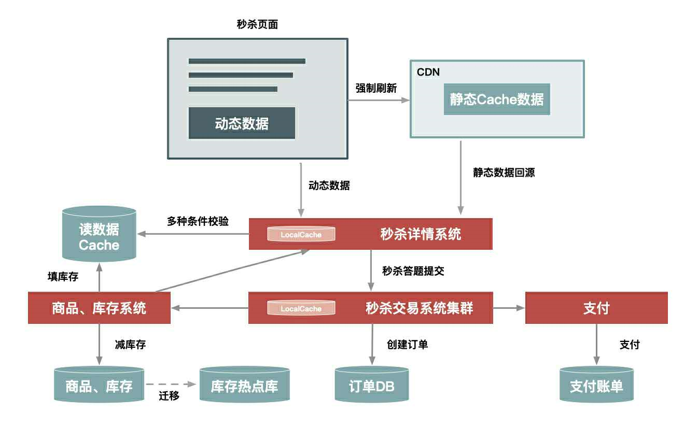

架构原则4要1不要
- 1）数据要尽量少，指用户请求的数据能少就少。请求的数据包括上传给系统的数据和系统返回给用户的数据（通常就是网页）
- 2）请求数要尽量少
- 3）路径要尽量短，就是用户发出请求到返回数据这个过程中，需求 经过的中间节点数。通常，这些节点可以表示 为一个系统或者一个新的Socket连接。每经过一个节点，一般就会产生一个新的Socket连接
- 4）依赖要尽量少，指的是要完成一次用户请求必须依赖的系统或者服务，这里的依赖指的是强依赖
- 5）不要有单点，系统中的单点可以说是系统架构上的一个大忌，因为单点意味着没有备份，风险不可控，我们设计分布式系统最重要的原则就是“消除单点”。那如何避免单点？我认为关键点是将服务的状态和机器绑定，即把服务无状态仳，这样服务就可以在机器中随意移动
架构是一种平衡的艺术，而最好的架构一旦脱离了它所适应的场景，一切都将是空谈
秒杀系统架构图：

“动态数据”和“静态数据”的主要区别就是看页面中输出的数据是否和URL、浏览者、时间、地域相关，以及是否含有Cookie等私密数据
如何做静态数据缓存
- 1）应该把静态数据缓存到离用户最近的地方：就是那些相对不会变化的数据，常见的缓存到用户浏览器、CDN、服务端的Cache中
- 2）静态化改造就是要直接缓存HTTP连接。静态化改造是直接缓存HTTP连接而不是仅仅缓存数据，Web代理服务器根据请求URL，直接取出对应的HTTP响应头和响应体然后直接返回，这个响应过程简单得连HTTP协议都不用重新组装，甚至连HTTP头也不需要解析
- 3）让谁来缓存静态数据也很重要。不同语言写的Cache软件处理缓存数据的效率也各不相同，相比起来，Web服务器（如Nginx、Apache、Varnish）更擅长处理大并发的静态文件请求
从5个方面来分离动态内容
- 1）URL唯一化
- 2）分离浏览者相关的因素：是否已登录、登录身份等
- 3）分享时间因素
- 4）异步化地域因素
- 5）去掉Cookie：在缓存的静态数据中不含有Cookie
动态内容的处理方案：
- 1）ESI（SSI）：即在Web代理服务器上做动态内容请求，并将请求插入到静态页面中
- 2）CSI：即单独发起一个异步JS请求，以向服务端获取动态内容
动静分离三种架构方案：
- 1）实体机单机部署：将虚拟机改为实体机，以增大Cache的容量，并且采用一致性Hash分组的方式来提升命中率

- 2）统一Cache层：就是将单机的Cache统一分离出来，形成一个单独的Cache集群

- 3）上CDN，选择CDN的二级Cache比较合适，因为二级CDN数量偏少，容量也更大，让用户的请求先回源的二级Cache中，如果没命中再回源站获取数据，注意：
- 失效问题：也就是缓存时效问题
- 命中率问题
- 发布更新问题

一部分被大量用户访问的热卖商品，就是常说的热点数据。而在很短时间内被大量用户执行访问 、添购、下单等的操作，称为热点操作
为什么要关注热点：
- 1）热点请求会大量占用服务器处理资源，虽然这个热点可能只占请求问题的亿分之一，然而却可能抢占90%的服务器资源，如果这个热点请求还是没有价值的无效请求，那么对系统资源来说完全是浪费
- 2）即使这些热点是有效的请求，也要识别出来做针对性的优化，从而用更低的代价来支撑这些热点请求
热点数据又分为静态热点数据和动态热点数据：
- 1）静态热点数据：就是能够提前预测的热点数据。如活动前通过商家报名
- 2）动态热点数据：就是不能被提前预测到的，系统在运行过程中临时产生的热点
发现热点数据：
- 1）发现静态热点数据：通过商业手段，如活动报名，实现方式是通过运营系统进行打标、或实时统计热卖商品TOP N
- 2）发现动态热点数据：
- 构建一个异步的每户，可以收集交易链路上各个环节中的中间件产品的热点Key，如Nginx、缓存、RPC服务框架等这些中间件
- 建立一个热点上报和可以按照需求订阅的热点服务的下发规范，主要目的是通过交易链路上各个系统（包括详情、购物车等）访问的时间差，把上游已经发现的热点透传给下游系统，提前做好保护
- 将上游系统收集的热点数据发送到热点服务台，然后下游系统（如交易系统）就会知道哪些商品被频繁调用，然后做热点保护

打造热点系统的注意事项：
- 1）这个热点服务后台抓取热点数据日志最好采用异步方式，因为“异步”一方面便于保证通用性，另一方面又不影响业务系统和中间件产品的主流程
- 2）热点服务发现和中间件自身的热点保护模块并存，每个中间件和应该还需要保护自己。热点服务台提供热点数据的收集和订阅服务，便于把各个系统的热点数据透明出来
- 3）热点发现要做到接近实时（3s内完成热点数据的发现），因为只有做到接近实时，动态发现才有意义，才能实时地对下游系统提供保护
处理热点数据：
- 1）优化：最有效的办法就是缓存热点数据，但缓存热点数据更多的是“临时缓存”，即不管是静态数据还是动态数据，都用一个队列短暂地缓存数秒钟钟，由于队列长度有限，可以采用LRU淘汰算法替换
- 2）限制：更多的是一种保护机制，例如对被访问商品的ID做一致性Hash，然后根据Hash分桶，每个分桶设置一个处理队列，防止某些热点商品占用太多的服务器资源，而使其他请求始终得不到服务器的处理资源
- 3）隔离：秒杀系统设计的第一个原则就是将这种热点数据隔离出来，不要让1%的请求影响到另外的99%，隔离出来以后也更方便对这1%的请求做针对性的优化
- 业务隔离：如卖家单独报名
- 系统隔离：运行时的隔离，可以通过分组部署的方式和另外99%分开，秒杀可以申请单独的域名，目的也是让请求落到不同的集群中
- 数据隔离：启用单独的Cache集群或者MySQL数据库来放热点数据
流量削峰：
- 1）排队：消息队列缓冲瞬时流量，把同步的直接调用转换成异步的间接推送，中间通过一个队列在一端承接瞬时的流量洪峰，在另一端平滑地将消息推送出去

- 除了消息队列，还可以：
- a）利用线程池加锁等待
- b）先进先出、先进后出等内存排队算法
- c）把请求序列化到文件中，然后再顺序地读文件（类似到MySQL的binlog同步机制）来恢复请求
- 2）答题：主要是为了增加购买的复杂度，从而达到：防止部分买家使用秒杀器、延缓请求

- 题库逻辑主要分为3部分：
- a）题库生成模块，需要防止机器能算出结果，也就是秒杀器
- b）题库的推送模块：保证每次用户请求的题目是唯一的，目的也是为了防止作弊
- c）题目的图片生成模块：用于把题目生成为图片格式，并且在图片中增加一些干扰因素。可以把图片提前推送到CDN
- 3）分层过滤：对请求进行分层过滤，从而过滤掉一些无效的请求，其实就是采用“漏斗”式设计来处理请求

- 假如请求分别经过CDN、前台读系统、后台系统和数据库这几层，那么：
- a）大部分数据和流量在用户浏览器或者CDN上获取
- b）前台数据尽量走Cache，过滤一些无效请求
- c）后台系统主要做数据的二次检验，对系统做好保护和限流
- d）在数据库层完成数据的强一致性校验
- 分层过滤的核心思想是：在不同的层次尽可能地过滤掉无效请求，让“漏斗”最末端的才是有效请求
- 基本原则是：
- a）将动态请求的读数据缓存（Cache）在web端，过滤掉无效的数据读
- b）对读数据不做一致性校验，减少因为一致性检验产生瓶颈问题
- c）对写数据进行基于时间的合理分片，过滤掉过期的失效请求
- d）对写请求做限流保护，将超出系统承载能力的请求过滤掉
- e）对写数据进行强一致性校验，只保留最后有效的数据
真正对性能有影响的是CPU的执行时间，因为CPU的执行真正消耗了服务器的资源，如果减少CPU一半的执行时间，就可以增加一倍的QPS，我们应该致力于减少CPU的执行时间
多线程场景都有一个默认配置，即“线程数=2*CPU核数+1”。还有一个根据实践得出的公式：线程数=[(线程等待时间+线程CPU时间)/线程CPU时间]*CPU数量。最好的办法是通过性能测试来发现最佳的线程数。
要提升性能，我们就要减少CPU的妊时间，另外就是要设置一个合理的并发线程数，通过这两方面来显著提升服务器的性能
很多工具可以发现CPU的消耗，最常用的是JProfiler和Yourkit这两个工具
怎样简单地判断CPU是不是瓶颈呢？一个办法就是看当QPS达到极限时，你的服务器的CPU使用率是不是超过了95%，如果没有超过，那么表示CPU还有提升空间，要么是有锁限制，要么是有过多的本地I/O等待发生
减库存操作一般包括：
- 1）下单减：最简单、控制最精确，不会出现超卖，但有可能下单后不付款
- 2）付款减：如果并发高，可能出现下单后付不了款，也有可能超库存
- 3）预扣库存：先扣，一定时间不付款库存释放
针对恶意下单：
- 设置付款时限
- 安全和反作弊：给经常下单不付款的买家标识、设置最大购买数、重复下单不付款操作次数限制
针对库存超卖：业务角度进行补货、提示库存不足
大型秒杀中一般采用使用下单减库存，在数据一致性上主要就是保证大并发请求时库存数据不能为负数，多种解决方案：
- 应用程序中事务
- 设置数据库的字段为无符号整数
- 使用CASE WHEN语句
使用缓存来当库存，直接操作缓存的库存：如果商品的库存逻辑简单，如没有复杂的sku
要解决并发锁的问题，有两种办法：
- 1）应用层做排队：按照商品维度设置队列顺序执行
- 2）数据库层做排队
系统的高可用建设：
- 1）架构阶段：主要考虑系统的可扩展性和容错性，要避免系统出现单点问题，如多机房单元化部署
- 2）编码阶段：保证代码的健壮性，对错误异常进行捕获处理
- 3）测试阶段：保证测试用例的覆盖度，保证最坏情况发生时，我们也有相应的处理流程
- 4）发布阶段：紧急的回滚机制
- 5）运行阶段：系统的监控要准确及时，发现问题能够准确报警并且报警数据要准确详细
- 6）故障发生：及时止损、及时恢复、定位问题并解决
大流量应对：
- 1）降级：当系统的容量达到一定程度时，限制或关闭系统的某些非核心功能，从而把有限的资源保留给核心的业务。是一个有目的、有计划的执行过程，所以一般有一套预案来配合执行。如果系统仳，就可以通过预案系统和开关系统来实现降级。如当秒杀时流量达到5w/s，就把成交记录的获取从20条降级为5条
- 2）限流：当系统容量达到瓶颈时，需要通过限制一部分流量来保护每户，并做到既可以人工执行开关，也支持自动化保护的措施
- 客户端限流：可以限制请求的发出，但当客户端比较分散时，没法设置合理的限流阈值
- 服务端限流：基于QPS和线程数的限流
- 3）拒绝服务：当系统负载达到一定阈值时，如CPU使用率达到90%或者系统load值达到2*CPU核数时，系统直接拒绝所有请求。是一种不得已的兜底方案。
- 最前端Nginx上设置过载保护
- 应用层也可以设计过载保护